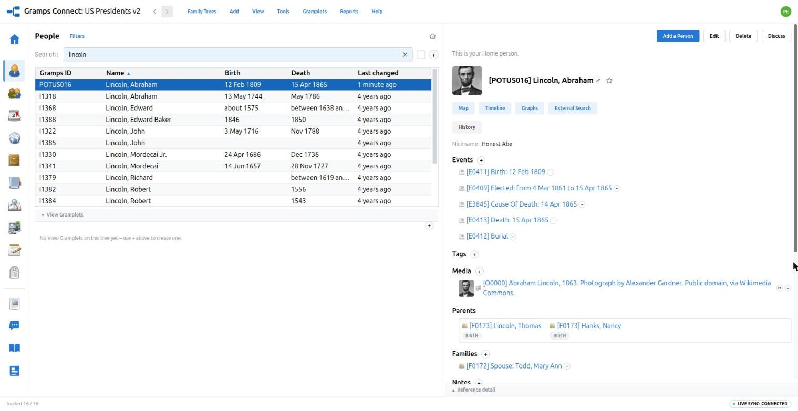

Welcome to the Gramps Connect blog
Gramps Connect now has a blog. This is where new releases, new features, and notes on how things work behind the scenes will be posted. You can follow along here, or subscribe to the feed in any feed reader.
Take the tour
If you haven’t tried Gramps Connect yet, the quickest way to see what it does is the new narrated tour. It walks through a real family tree (Abraham Lincoln’s) and shows the main views: lists and columns, filters, charts, maps, stories, working together with others, and Gramplets.

Where to go next
- Download Gramps Connect for Windows, macOS or Linux.
- Host it for your family so several people can work on one tree.
- Ask questions and share ideas on the Gramps Discourse forum.